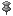

What is a Sticky Task?
Basically: if you want a task to stay visible after it has been completed you can use the push-pin  to make the task "sticky".
Sometimes a task is ongoing and it is not fully complete, even when its sub-tasks are all completed or the current status is 100%. Or perhaps, you have completed the task in question but you want to remember to go back and check on it again later. Making a task "sticky" means it will still show up on the Home screen (if it is a root task) and in the task tree.
Previous Page | Table of Contents | Next Page
Last Modified: February 28, 2005 @ 12:17 pm
(check for an updated version of this page)